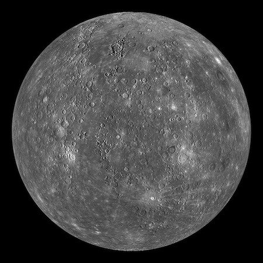
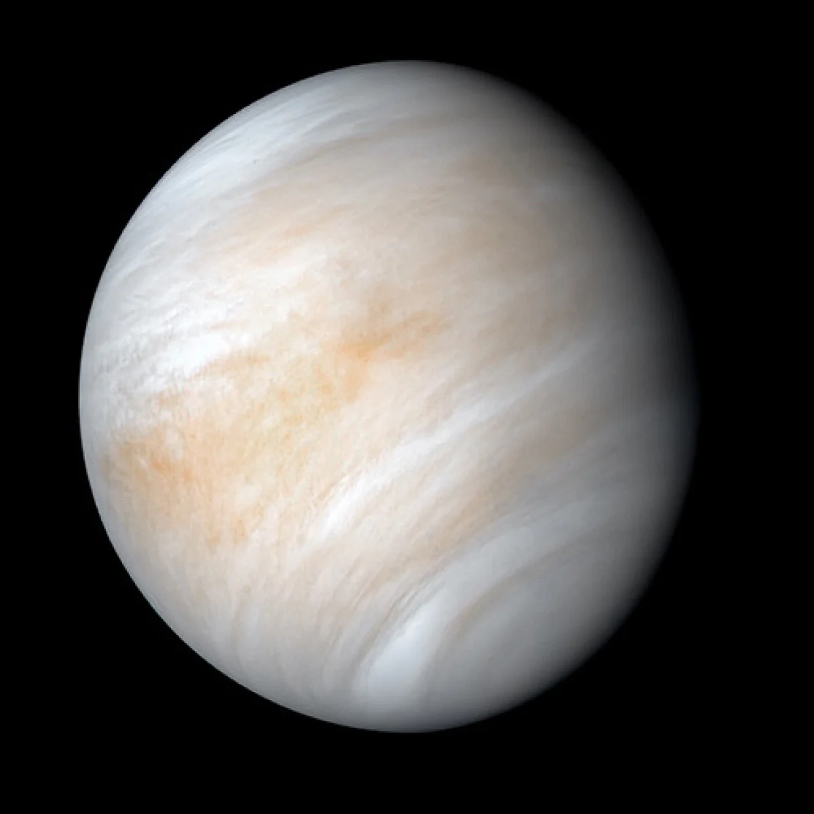

Planets of Our Solar System
Mercury
Mercury is the closest planet to the Sun and is also the smallest planet in our solar system. It has no moons and is known for its extreme temperature fluctuations.
Venus
Venus is often called Earth's "sister planet" because of their similar size. However, it has a thick atmosphere that traps heat, making it the hottest planet in our solar system.
Mars
Often referred to as the "Red Planet", Mars has a thin atmosphere and is known for its red color due to iron oxide (rust) on its surface. It has two small moons: Phobos and Deimos.